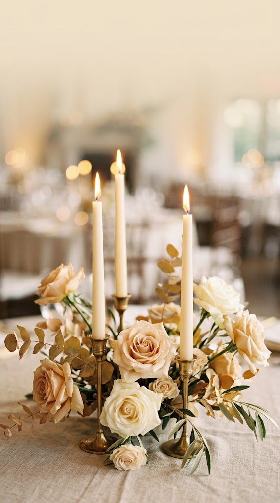

Canlı Önizleme
Soldaki telefon, davetiyenin gerçek kapak ekranı — köşe çiçekleri ve mum görseliyle birlikte. Sağdaki ayarlarla oynadıkça anında değişiyor.
İpek & Kaan
DAVETLİSİNİZ

Beğendiğin kombinasyonu bulduğunda bu kutudaki 3 satırı (zemin, font, büyüklük) bana söyle veya ekran görüntüsü at — davetiyenin tamamına ben işleyeyim.